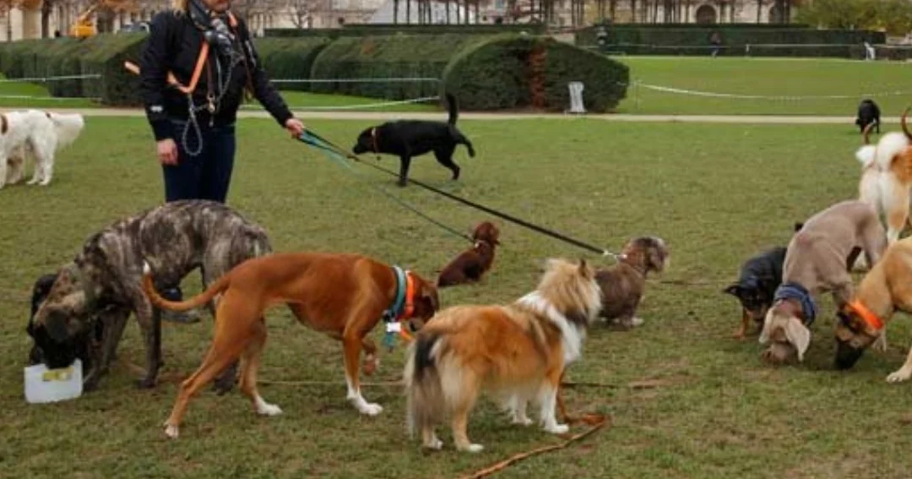

Santiago - Voluntario
"Como voluntario, me di cuenta del arduo trabajo que tienen estos trabajadores con los animalitos que se rescatan, me llena el corazon el poder contribuir a una causa tan noble como esta, gracias Patitas Felices por darme la oportunidad de vivir esta experiencia tan nutritiva."